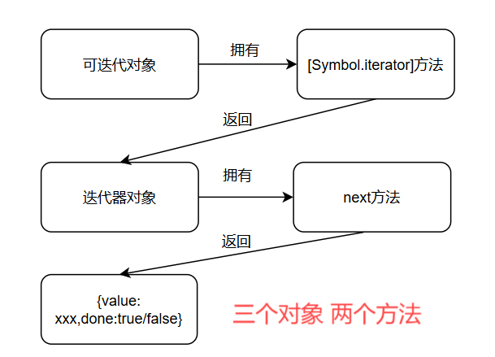

es6新增了哪些特性
- 新增了let和const这2给关键字
- 在数组中新增了扩展运算符，还新增了比如
Array.from在内的一些数组方法 - 在函数中开始支持给参数添加默认值，新增的了箭头函数
- 在对象中新增了属性简写，属性名表达式，解构赋值等特性
- 新增了Set和Map这两种数据结构
- 新增了promise对象，新增了proxy对象
- 新增了esm语法
var,let,const有哪些区别
在ES5中，顶层对象（在浏览器中是window）的属性和全局变量是等价的，或者说全局变量会被挂载到window对象中，
从下面三个点来回答：
变量提升
var声明的变量存在变量提升，变量提升只提升变量声明，不提升变量赋值。而let和const不存在变量提升重复声明
var声明的变量可以被重复声明，后面声明的会覆盖前面声明的。而
let和const声明的变量无法被重复声明。只有
var声明的变量才存在变量提升，只有具名函数才存在函数提升。作用域
var声明的变量的作用域是函数作用域或者全局作用域，不会产生块级作用域
let和const生成的作用域是块级作用域，大括号包括起来的代码所在的作用域就是块级作用域
所以为什么es6中要引入const和let呢？在 eS6 之前，JavaScript 只有 var 声明变量，但它有几个“令人困惑”的行为：
var声明的变量可以在被声明前访问，而且不会报错
1 | console.log(x) // undefined（不会报错！） |
var 没有块级作用域，代码块内的var变量竟然可以在代码块外被访问到，不符合传统语言的规范
1 | if (true) { |
var 在循环中闭包问题
1 | for (var i = 0; i < 3; i++) { |
数组新增了哪些扩展
扩展运算符 …
扩展运算符的作用就是把数组变成一个序列
1 | console.log(...[1, 2, 3]) //等同于console.log(1,2,3) |
用途包括：
用来展开数组
1
Math.max(...arr)//求数组arr的最大值
用来合并，拷贝数组
拷贝数组进行的是
浅层次的拷贝1
const arr = [...arr1,...arr2]
将对象转化成数组
定义了遍历器（Iterator）接口的对象（可迭代对象），都可以用扩展运算符转为真正的数组
1
2
3
4
5
6
7
8
9
10let nodeList = document.querySelectorAll('div');
let array = [...nodeList];
let map = new Map([
[1, 'one'],
[2, 'two'],
[3, 'three'],
]);
let arr = [...map.keys()]; // [1, 2, 3]如果对没有
Iterator接口的对象，使用扩展运算符，将会报错，因为这些对象是不可迭代的。1
2const obj = {a: 1, b: 2};
let arr = [...obj]; // TypeError: Cannot spread non-iterable object除非写成
{...obj}的形式，表示拷贝对象。
数组构造函数的新增方法
关于构造函数，数组新增的方法有如下：
- Array.from()
- Array.of()
Array.from()
将两类对象转为真正的数组：类数组对象(伪数组)和可迭代对象（包括 ES6 新增的数据结构 Set 和 Map）
伪数组（类似数组的对象）指的是：
- 具有
length属性。 - 按照索引存储元素（即可以通过
[0],[1],[2]等方式访问元素）
1 | let arrayLike = { |
常见的伪数组对象，真正的类型是普通i的对象，不是Array构造函数创建的实例，和真正数组不同的是，不能调用数组上的方法。
函数中的
arguments对象：1
2
3
4function example() {
return Array.from(arguments);
}
console.log(example(1, 2, 3)); // 输出: [1, 2, 3]DOM 操作返回的
NodeList
1
2
3const nodeList = document.querySelectorAll('div');
const divArray = Array.from(nodeList);
console.log(divArray); // 转换为真正的数组
Set和Map的情况
1 | // Set |
从上述例子中可以看出，数组和Set或者Map二者之间是可以相互转化的。对于Map来说，将其通过Array.from转化成数组，得到的是一个嵌套数组，数组中的每个元素都是一个数组，第一个元素是key，第二个元素是value。
还可以接受第二个参数，用来对每个元素进行处理，将处理后的值放入返回的数组，效果就类似Map
1 | Array.from([1, 2, 3], (x) => x * x)// [1, 4, 9] |
Array.of()
用于将一组值，转换为数组
1 | Array.of(3, 11, 8) // [3,11,8] |
当参数只有一个的时候，实际上是指定数组的长度
参数个数不少于 2 个时，Array()才会返回由参数组成的新数组
1 | Array.of() // [] |
数组原型上的新增方法
- find()、findIndex()
- fill()
- entries()，keys()，values()
- includes()
find,findIndex
find()用于找出，返回第一个符合条件的数组成员
参数是一个回调函数，接受三个参数依次为当前的值、当前的位置和原数组
1 | let a = [1, 5, 10, 15] |
1 | findIndex//返回第一个符合条件的数组成员的位置，如果所有成员都不符合条件，则返回-1 |
fill
使用给定值，填充一个数组
1 | ['a', 'b', 'c'].fill(7) |
还可以接受第二个和第三个参数，用于指定填充的起始位置和结束位置，左闭右开
1 | ['a', 'b', 'c'].fill(7, 1, 2) |
注意，如果填充的类型为对象，则是浅拷贝，即被填充的数据，使用的都是同一个对象
1 | ['a', 'b'].fill({name:'tom'}) |
includes
用于判断数组是否包含给定的值，相比indexOf方法，优化了对NaN的判断
1 | [1, 2, 3].includes(2) // true |
函数新增了哪些扩展
参数
ES6允许为函数的参数设置默认值
1 | function log(x, y = 'World') { |
函数的形参是默认声明的，不能使用let或const再次声明
1 | function foo(x = 5) { |
解构赋值过程中也可以给形参添加默认值
1 | function foo({x, y = 5}) { |
箭头函数
形如：
1 | ()=>{} |
更适用于那些本来需要
匿名函数的地方，类似lambda表达式，它和普通匿名函数一样，它属于表达式函数，不存在函数提升箭头函数看起来是匿名的，但是可以通过前面的变量名或者属性名，推断出同名的name
1
2
3
4const func = () => {
console.log('你好啊')
}
console.log(func.name)//输出func只有一个
参数的时候可以省略括号；只有一行代码且是return语句，可以省略大括号和return关键字，如果返回的是一个对象，则需要加括号。1
2item => item.name //等同于(item)=>{ return item.name }
item => ({name:'tom'})没有自己的环境变量
this，内部的this指向被定义的时候外层函数的this，this指向和如何被调用无关因为没有自己的环境变量
this，所以无法使用apply，call，bind等方法改变箭头函数内部的this指向，但是可以调用这些方法。箭头函数不仅没有自己的this，内部也没有
arguments对象。arguments在一般函数内部可以直接使用（如同this），即便函数没有形参，也可以给函数传参，传递的所有参数都会被收集到arguments对象没有自己的
原型对象（prototype），所以不能当作构造函数使用，不能用来创造实例（不能对箭头函数使用new关键字）。所以说箭头函数是三无产品，没有没有this，没有arguments，没有prototype
其他
属性
函数本质也是个对象，有许多属性
func.length将返回没有指定
默认值的参数个数，具体情况还得具体分析，感觉很鸡肋。func.name如果把
匿名函数赋值给一个变量，则name属性返回这个变量的名字1
2
3
4
5var f = function () {};
// ES5
f.name // ""
// ES6
f.name // "f"如果将一个
具名函数赋值给一个变量，则name属性都返回这个具名函数原本的名字1
2const bar = function baz() {};
bar.name // "baz"bind返回的函数，name属性值会加上bound前缀1
2function foo() {};
foo.bind({}).name // "bound foo"
作用域
一旦设置了参数的默认值，函数进行声明初始化时，参数会形成一个单独的作用域
等到初始化结束，这个作用域就会消失。这种语法行为，在不设置参数默认值时，是不会出现的
下面例子中，y=x会形成一个单独作用域，x没有被定义，所以指向全局变量x
1 | let x = 1; |
箭头函数中this的指向
箭头函数没有自己的this，它内部的this始终指向箭头函数被定义的时候，外部函数作用域中的this
就拿下面这个例子举例：
1 | var obj = { |
- fn返回的箭头函数在fn中被定义，所以这个箭头函数的
this终指向fn中的this - 但是
fn函数中的this指向，也是由调用fn的方式决定的 fn1是通过obj调用fn返回的箭头函数，所以此时fn中的this指向obj，所以fn1中的this始终指向objobj.fn.bind()返回一个函数，这个函数内部使用{ a: 2 }调用obj.fn，且这个函数的返回值就是obj.fn函数的返回值- 所以
fn2其实就是箭头函数() => this.a，其中this的指向就是{ a: 2 } obj.fn.call({ a: 3 })使用{ a: 3 }调用obj.fn，call方法的返回值就是obj.fn的返回值- 所以
console.log(fn1(), fn2(),fn3())，打印1，2，3
严格模式
必须写在
当前作用域的作用域顶部才能生效当一个函数被直接调用，先查看这个函数作用域中的顶部是否开启了严格模式，如果开启了，那么这个函数中的this指向就是undefined，如果没开启，那么再查看全局作用域顶部是否开启了严格模式，如果没开启，则此时函数内部的this指向才会是全局对象window。也就是说直接调用的函数想要this有指向，有内外
1 | let num = 117 |
1 | ; |
严格模式不能随便开启
只要函数形参使用了默认值、解构赋值、或者扩展运算符，那么函数内部就不能显式设定为严格模式，否则会报错。所以说函数内部也不能随便开启严格模式。
1 | // 报错 |
严格模式只能改变直接被调用的函数内部的this的指向，即便开启了严格模式，全局作用域中的this还是指向全局对象，所以说，全局作用域中的this始终指向全局对象
1 | <script> |
对象新增了哪些扩展
属性的简写
ES6中，当对象键名与对应值名相等的时候，可以进行简写
1 | const baz = {foo:foo} |
方法也能够进行简写
1 | const o = { |
属性名表达式
eS6 允许字面量定义对象时，将表达式放在中括号内，当作对象的属性。
1 | let lastWord = 'last word'; |
注意，属性名表达式与属性名简写，不能同时使用，会报错。
1 | // 报错 |
super关键字
this关键字总是指向函数所在的当前对象，ES6 又新增了另一个类似的关键字super，指向当前对象的原型对象
即super=this.__proto__
解构赋值
这项特性允许开发者从复杂的数据结构如对象或数组中提取数据，并直接将这些数据赋值给变量。这种机制不仅使得代码更加简洁易读，还提高了开发效率。
1 | const person = { |
要注意的是因为使用的是const关键字，所以上述解构赋值得到的数据都是常量。
如何理解ES6新增Set、Map两种数据结构
Set是一种叫做集合的数据结构，什么是集合？什么又是字典？
集合：是由一堆无序的、相关联的，且不重复的内存结构【数学中称为元素】组成的组合
字典：是一些元素的集合。每个元素有一个称作key 的域，不同元素的key各不相同
Set
Set本身是一个构造函数，用来生成Set数据结构
1 | const s = new Set(); |
new Set() 在创建集合时，支持传入一个“可迭代对象”（iterable）作为参数，用于初始化集合中的元素。
1 | // 数组 |
也可传入一个set，作用是浅拷贝这个set。
增删改查
Set的实例关于增删改查的方法：
add()
向集合中添加元素，返回修改后的集合，所以可以链式调用
当添加实例中已经存在的元素，set不会进行处理添加，即会被去重
1 | s.add(1).add(2).add(2); // 2只被添加了一次 |
delete()
删除某个值，返回一个布尔值，表示删除是否成功
1 | s.delete(1) |
has()
返回一个布尔值，判断集合中是否存在某个元素
1 | s.has(2) |
clear()
清除所有成员，没有返回值
1 | s.clear() |
遍历
关于遍历的方法，有如下：
keys()
返回键名的迭代器
1 | let set = new Set(['red', 'green', 'blue']); |
values()
返回键值的迭代器
1 | let set = new Set(['red', 'green', 'blue']); |
entries()
返回键值对的迭代器
1 | let set = new Set(['red', 'green', 'blue']); |
forEach
集合Set也能像数组那样调用forEach方法
1 | let set = new Set([1, 4, 9]); |
Map
Map类型是键值对的有序列表，而键和值都可以是任意类型
Map本身是一个构造函数，用来生成 Map 数据结构
1 | const m = new Map() |
增删查改
Map 结构的实例针对增删改查有以下属性和操作方法：
size 属性
size属性返回键值对的个数
1 | const map = new Map(); |
set()
设置键名key对应的键值为value，然后返回整个Map结构
如果key已经有值，则键值会被更新，否则就新生成该键
同时返回的是当前Map对象，可采用链式写法
1 | const m = new Map(); |
get()
get方法读取key对应的键值，如果找不到key，返回undefined
1 | const m = new Map(); |
has()
has方法返回一个布尔值，表示某个键是否在当前 Map 对象之中，类似于Obj中的hasOwnProperty
1 | const m = new Map(); |
delete()
1 | delete`方法删除某个键，返回`true`。如果删除失败，返回`false |
clear()
clear方法清除所有成员，没有返回值
1 | let map = new Map(); |
遍历
keys()
返回键名的迭代器，而不是键名的数组
1 | //传入一个二维数组说是 |
values()
返回键值的迭代器，而不是键值的数组
1 | //传入一个二维数组说是 |
entries()
返回键值对的迭代器
1 | const map = new Map([ |
forEach()
遍历 Map 的所有成员，既能遍历value，也能遍历key
1 | //map中的forEach的用法和set中的一样 |
Map和Obj的区别
很多时候我们都可以使用Obj来实现Map的功能，毕竟都是键值对的形式，那二者具体有什么区别呢，Map被设计出来有什么优势呢？
Map中的键可以是任意类型
当使用普通对象 {} 作为键值对存储时，默认情况下只能使用字符串或符号(Symbol)作为键。如果尝试用其他类型的值作为键，JavaScript 会自动将其转换为字符串。
1 | let obj = {}; |
从上面的例子可以看出，{ name: 'key' }和{ name: 'key2' }都被转化成[object Object]，它们被视为相同的键
相比之下，Map 可以直接使用任何类型的值作为键，并且不会进行隐式的类型转换。
1 | let obj = new Map(); |

获取大小
Object没有直接的方法，来获取对象中属性的数量。你需要手动计算，例如通Object.keys()计算返回的数组的长度1
2const obj = { a: 1, b: 2 };
console.log(Object.keys(obj).length); // 输出 2Map提供了size属性，可以直接获取键值对的数量。
性能
在频繁地增删键值对时，Map 的性能通常优于 Object。这是因为 Map 是专门为动态场景设计的，而对象更适合静态结构的数据。
总结
- Set对应数据结构中的
集合，Map对应数据结构中的字典 - Set本质是键和值相同的Map
- Set和Map都有
has，clear，delete这三个方法； - Set独有的方法的是
add，返回Set实例本身，支持链式调用；Map独有的方法是get，set，其中set方法返回的也是Map实例本身，也支持链式调用。 - Set和Map的遍历的方法都包括
for...of...和forEach，其中for...of...的对象又包括各种迭代器。
你是怎么理解es6中 Promise的
是什么
是异步编程的一种解决方案，比传统的解决方案—回调函数，更加合理和更加强大
因为使用回调函数来解决异步编程问题，存在回调函数地狱问题，即在回调函数中嵌套回调函数，这样就导致代码的可读性变得很差，代码也变得难以维护。
而使用promise解决异步编程操作有如下优点：
链式操作减低了编码难度- 代码可读性明显增强
下面我们来正式介绍promise：
状态
promise对象仅有三种状态
pending（进行中）fulfilled（已成功）rejected（已失败）
对象的状态不受外界影响，只有异步操作的结果，可以决定当前是哪一种状态
一旦状态改变（从pending变为fulfilled和从pending变为rejected），就不会再变，也就是说promise实例的状态只能改变一次。
实例方法
Promise对象是一个构造函数，用来生成Promise实例
1 | const promise = new Promise(function(resolve, reject) { |
Promise构造函数接受一个函数作为参数，该函数的两个参数分别是resolve和reject
resolve函数的作用是，将Promise对象的状态从pending变为fulfilled，还支持传参，传入的参数会被当作promise对象的值。reject函数的作用是，将Promise对象的状态从pending变为rejected，还支持传参，传入的参数会被当作promise对象的值。
Promise构建出来的实例存在以下方法：then()，catch()，finally()
then
then方法会立即调用，但是它传入的回调函数，会等到实例状态发生改变时才被调用。第一个参数是成功的回调函数，第二个参数是失败的回调函数，传入的回调函数中还能拿到promise对象的值，但是一般我们只传入第一个回调函数。then方法返回的是一个新的Promise实例，而且是立即返回，也就是promise能链式书写的原因。
catch
catch()方法用于指定发生错误时的回调函数，本质就是在内部调用then(undefined,onRejected)，也就是说，catch方法其实就是由then方法包装而来。通常情况下，我们使用then的时候只传入第一个参数，即成功时的回调函数；然后再搭配catch使用，传入失败时的回调函数。
finally
finally()方法用于指定不管 Promise 对象最后状态如何，都会执行的操作，内部其实本质就是在调用then(onFinally,onFinally)
1 | promise |
静态方法
Promise构造函数存在以下方法：
- all()
- any()
- race()
- allSettled()
- resolve()
- reject()
promise的静态方法的返回值都是promise对象
关于这几个静态方法的详细介绍，参考手写promise部分。
手写一个Promise
为了帮助我们更深入的理解Promise，建议尝试自己手写一个Promise
参考资料：Day02-01.手写promise-核心功能-构造函数_哔哩哔哩_bilibili
同步修改promise状态
1 | const PENDING = 'pending' |
对于这种情况，我们编写then函数的时候就非常简单，只需要同步判断promise的状态，然后选择执行对应的回调函数即可。
举例测试
1 | const p = new myPromise((resolve,reject)=>{ |
异步修改promise状态
如果我们promise的状态是异步改变的，比如
1 | const p = new myPromise(( resolve , reject )=>{ |
创建完实例p后，我们同步调用then方法（调用then方法本身是同步的，创建promise对象，创建promise实例调用构造函数本身也是同步的）
1 | p.then(res=>{console.log(res)}, err => { console.log(err) } ) |
then方法在内部拿到实例的state后，遗憾的告知传入的2个回调函数，实例的状态还未改变，你们都不能被调用，而且我也不知道你们俩该什么时候被调用，所以then方法把这2个回调函数托管给别人，这个人就是handle数组。
我们希望promise状态改变的时候，传入then方法的2个回调函数有一个会被执行，那什么时候promise状态会改变呢？1s之后，还是2s之后？我们貌似找不到一个固定的时间点，其实能让promise状态改变的，就是在构造函数内部定义的那2个函数：resolve和rejected，它们其中任意一个被调用的时候，就是promise状态被改变的时候，而这2个函数何时被调用，又是由创建promise实例的时候，传入的函数决定的。
所以我们将传入then方法的回调函数，放到resolve或者reject函数中执行，就能完美处理异步回调的情况。也就是说，resolve和reject函数不仅要负责改变promise的状态，还需要负责执行then方法中传入的回调
1 | const PENDING = 'pending' |
处理then的返回值
因为then方法是支持链式调用的，意味着then方法的返回值也是一个promise对象，我们先修改一下then方法，确保能返回一个promise对象，这样书写并不会改变代码原有的功能，因为构造函数中的代码是立即执行的，原来的代码也是同步执行的
1 | then(onFulFilled, onRejected) { |
如果我们就这么写的话，then方法返回的promise对象（简记为p对象）的状态永远不会改变，因为resolve, reject方法永远不会被执行。我们需要明确一点：p对象的状态和值，是由传入then方法的回调函数的返回值决定的。这就意味着只有传入then方法的回调执行了，返回值了，p对象的状态才可能改变。因此我们能想到，将能修改p对象的状态和值的方法resolve, reject包装进then方法的回调中。
1 | wrap(func, resolve, reject) { |
这个wrap方法到底做了什么？
- 调用传入的回调函数
- 分析回调函数的返回值的类型，调用resolve或者reject方法
传入的resolve,reject，是被用来修改then方法返回的myPromise实例的状态的。then方法中也需要修改：
1 | then(onFulFilled, onRejected) { |
无论同步还是异步，我们都把传入的回调函数，交给构造函数中定义的resolve或者reject来执行，简化了代码。可以注意到onFulFilled/onRejected, resolve, reject这几个方法都没在then函数中调用，但是只要保证“这个函数是这个函数，无论它在哪里被调用，都会起到本来的作用”
举例测试：
1 | //创建一个1s后状态改变的promise对象 |
- 创建一个1s后变为
fulfilled的myPromise实例p - p同步调用then方法，因为p状态未确定，回调函数被
wrap包装，然后push到#handler - 虽然传入then的回调函数没有立马被调用，但是then方法已经返回了一个状态未改变的promise对象
- 第一个then方法返回的对象状态未改变，第2次then同步被调用，同理，回调函数被
wrap包装，然后push到#handler - 1s后，因为在构造函数内调用
resolve(1)方法，p的状态改变，值被设置为1，遍历执行#handler中的待执行的回调函数，于是执行被包装的回调函数 - 于是执行
第一个then传入的第一个回调函数，输出1，并返回一个状态1s后才resolve的promise对象 - 1s后，第一个then方法返回的promise的状态确定，值为2，然后第二个then传入的回调函数也被触发，输出2。

其他实例方法
实现catch方法
1 | catch(onRejected) { |
实现finally
1 | finally(onFinally) { |
静态方法
实现resolve静态方法
作用：立即返回以一个状态为fullfilled的promise对象，如果传入的本来就是myPromise实例，则直接返回
1 | static resolve(res) { |
实现reject静态方法
作用：立即返回以一个状态为rejected的promise对象，如果传入的本来就是myPromise实例，则直接返回
1 | static reject(err) { |
实现race静态方法
返回值是一个promise对象
传入一个数组**，返回最先兑现的
promise**，无论是resolve还是reject，只取一个值
1 | static race(arr) { |
实现all静态方法
返回值是一个promise对象
要求传入的数组中的所有myPromise对象的状态都
resolve后，再resolve(包含所有对象值的数组)如果任意一个对象reject了，则reject这个对象的值。
1 | static all(arr) { |
实现any静态方法
返回值是一个promise对象
要求传入的数组中的所有myPromise对象的状态都
rejected后，再reject一个异常对象如果任意一个对象resolve了，则resolve这个对象的值
可以看出any方法的作用和all方法的作用完全相反
1 | static any(arr) { |
实现allSettled方法
传入Promise都变成已敲定，即可获取兑现的结果，返回的promise对象最终会被兑现（状态变为fulfilled）
结果数组[{status: 'fulfilled', value: 1}, {status: 'rejected', value: 3)]
结果数组的顺序，和传入的Promise数组的顺序一致
1 | static allSettled(arr) { |
使用场景
使用Promise.all()合并多个请求，只需设置一个loading即可
1 | function initLoad(){ |
不过这样取数据，也就要从Promise.all的返回的promise对象中取数据了。
通过race可以设置图片请求超时时间，准确的来说，可以设置任何请求的超时时间。
1 | //请求某个图片资源 |
你是怎么理解ES6中 Generator的？使用场景？
什么是Generator
Generator ，也叫Generator 函数，是 ES6 提供的一种异步编程解决方案，语法行为与传统函数完全不同。
执行 Generator 函数会返回一个迭代器对象（iterator），形式上，Generator函数是一个普通函数，但是有两个特征：
function关键字与函数名之间有一个星号函数体内部，使用
yield(屈服，'叶儿得')关键字表达式，定义不同的内部状态。同时yield关键字还会暂停Generator函数内部代码的执行。1
2
3
4
5function* helloWorldGenerator() {
yield 'hello';
yield 'world';
return 'ending';
}
Generator函数体内不只可以写yield语句，还可以写其他语句比如return语句，console.log。调用Generator函数创建好迭代器，(iterator)，并不会执行Generator函数内的任何代码，只有调用了迭代器的next()方法，才会执行在某个状态前的所有代码。
什么是迭代器对象
JavaScript 规定：只要一个对象有 .next() 方法，且该方法返回一个具有value和done属性的对象：{ value, done }，它就是一个迭代器对象。

- 3个对象指的是：可迭代对象，迭代器对象，
{value:xxx.done:true/false}对象 - 可迭代对象拥有
[Symbol.iterator]方法，这个方法返回一个迭代器对象 - 迭代器对象拥有next方法，这个方法返回一个普通的对象，拥有value属性和done属性，分别表示迭代器对象内部的一个状态，迭代器内部的代码是否执行完毕且返回了值。
yield与next
1 | function* helloWorldGenerator() { |
1 | console.log(hw.next())//输出1 输出{ value: 'hello', done: false } |
done用来判断yield表达式是否执行完毕，且函数是否返回值（函数调用结束），value对应状态值
再举个例子
1 | function* helloWorldGenerator2() { |
1 | console.log(hw.next())//输出 1 { value: 'hello', done: false } |
第一个例子中有return表达式，第二个例子中没有，但是我们可以看作最后一行代码是return undefined
yield与next拓展
yield表达式本身没有返回值，或者说总是返回undefined
1 | function* foo(x) { |
通过调用next方法可以带一个参数，该参数就会被当作上一个yield表达式的返回值
1 | var b = foo(5); |
for in 和 for of的区别
区别
| 类别 | 作用 |
|---|---|
| for in | 遍历一个对象上的所有可枚举属性，包括继承的可枚举属性，不包括Symbol类型的属性。我们常常把它和Object.keys()做比较，Object.keys()只会返回一个对象自己的所有可枚举属性，也不包括Symbol类型的属性 |
| for of | 遍历一个可迭代对象上的值，不包括继承的属性的值，不包括Symbol类型属性的值 |
- 是否可枚举是针对属性的，是否可迭代是针对对象的
- 普通对象上的属性几乎都是可枚举的，但是本身不可迭代，Set，Map上没有可枚举的属性，但是本身是可迭代的
可枚举
1 | const str = '123' |
对上述数据分别调用Object.getOwnPropertyDescriptors方法，获取每个属性的描述对象，发现在set和map上没有看见enumerable: true的属性，我们再输出一下set和map

可以看出set和map上只有[[Entries]]和[[Prototype]]属性，而且是灰色的，说明都是不可枚举的
再依次对这些数据调用for in方法，依次输出：
1 | 0 1 2 |
可以看出对于set和map调用for in不会有任何效果，没有输出任何东西 ，因为它们身上没有可枚举属性
可迭代
可迭代数据，需要存在一个名为[Symbol.iterator]的属性（方法）（Symbol.iterator是一个Symbol类型的键），调用这个方法返回一个迭代器对象。
1 | const str = '123' |
1 | //依次输出 |
可以看出，数组，字符串，Set，Map上有[Symbol.iterator]方法，是可迭代的对象，而普通的对象上没有[Symbol.iterator]方法，是不可迭代的。
依次对上述数据调用for of：
1 | const str = '123' |
依次输出
1 | 1 2 3 |
这一结果证明了只有可迭代数据可以调用for of
可迭代对象与for of
当使用 for...of 遍历一个可迭代数据时，它实际上调用了该数据的 [Symbol.iterator] 方法，并根据迭代器提供的值(yield)，进行迭代。
1 | const set = new Set([10, 20, 30]) |
虽然普通对象默认不是可迭代的，但是我们可以把它转化成一个可迭代的对象
1 | //根据传入的对象，创造一个生成器函数 |
异步编程解决方案
回顾之前展开异步编程解决的方案：
- 回调函数
- Promise 对象
- generator 函数
- async/await
回调函数
1 | setTimeout(()=>{console.log(123)},1000) |
Promise
Promise就是为了解决回调地狱而产生的，将回调函数的嵌套，改成链式调用
1 | readFile('/etc/fstab').then(data =>{ |
这种链式操作形式，使异步任务的两段执行更清楚了，但是也存在了很明显的问题，代码变得冗杂了，语义化并不强，Generator就是用来解决这个问题的。
Generator
1 | function fetchUser(id) { |
虽然生成器提供了处理异步代码的一种方式，但它的使用相对复杂，还是不够简洁，于是就有了async和await
async/await
async 函数本质上是构建在生成器之上的语法糖，它们内部实际上使用了 Promise，并且允许你以同步的方式编写异步代码，而不需要显式地处理迭代器或手动调用 next()。
1 | async function asyncFunc() { |
值得注意的是，async函数无论是否有return语句，都会返回一个promise对象。为什么呢？如果return一个非promise值，该值会被Promise.resolve()包装，如果没有return语句，默认会返回一个已解决的Promise，其值为undefined；如果返回一个promise对象，那么最终返回的也就是这个promise对象。
其实简单的来说，async函数的返回值会被Promise.resolve()方法包装。
你是怎么理解ES6中Proxy的？使用场景?
是什么
Proxy 是一个构造函数，用于创建一个对象的代理，从而拦截对该对象的基本操作。
1 | var proxy = new Proxy(target, handler) |
target表示所要拦截的目标对象（任何类型的对象，包括原生数组，函数，甚至另一个代理）
handler是一个属性值一般都是函数的对象，各属性中的函数分别定义了在执行各种操作时代理目标对象的行为
难点就在于分析这个handler，它可以包括多种拦截属性，下面我们只介绍常见的几种:
get(target,propKey,receiver)：拦截对象属性的读取set(target,propKey,value,receiver)：拦截对象属性的设置deleteProperty(target,propKey)：拦截delete proxy[propKey]的操作，返回一个布尔值
handler
get()
get接受三个参数，依次为目标对象、属性名和 proxy 实例本身，最后一个参数可选
用来监听对某个属性的取值。
1 | var person = { |
注意：如果一个属性不可写（writable:false），则 Proxy 不能修改该属性，否则会报错
1 | const target = Object.defineProperties({}, { |
set()
set方法用来拦截对某个属性的赋值操作，可以接受四个参数，依次为目标对象、属性名、属性值和 Proxy 实例本身。
如果目标对象自身的某个属性，不可写（writable:false），那么set方法将不起作用
1 | const obj = {}; |
注意，严格模式下，set代理如果没有返回true，就会报错
deleteProperty
deleteProperty方法用于拦截delete操作，如果这个方法抛出错误或者返回false，当前属性就无法被delete命令删除
1 | var handler = { |
注意，目标对象自身的不可配置（configurable:false）属性，不能被deleteProperty方法删除。
取消代理
1 | Proxy.revocable(target, handler); |
你是怎么理解ES6中Module的？使用场景？
如果没有模块化，我们代码会怎样？
- 变量和方法不容易维护，容易污染
全局作用域 - 通过手动规定
script标签的书写顺序来控制资源的加载顺序 - 资源的
依赖关系模糊，代码难以维护。
而模块化具有代码抽象，代码封装，代码复用，依赖管理的特点能解决原生开发过程中的诸多问题
ES6 之前，JavaScript 运行在浏览器中时：没有原生的模块机制，所有脚本共享全局作用域，依赖通过<script>标签顺序加载，容易出错。开发者只能依靠第三方方案：
CommonJS：在Node.js上使用CommonJS语法模块化开发项目，然后再使用打包工具将代码打包成能在浏览器上运行的代码。AMD：浏览器异步加载（如 RequireJS），异步模块定义，采用异步方式加载模块。所有依赖模块的语句，都定义在一个回调函数中，等到模块加载完成之后，这个回调函数才会运行。UMD：兼容 CommonJS 和 AMD
但这些都不是语言原生支持的。 ES6 首次在语言层面定义了模块语法esm。
CommonJS
是nodejs默认支持的模块化语法。
导入
使用 require 函数来导入模块，导入自定义模块写相对路径，导入第三方模块或者内置模块使用模块名
1 | const myModule = require('./myModule'); |
或者
1 | const http = require('http'); |
通过require导入模块的方式都是同步的，也就是说会阻塞后续的代码的执行，而且第一次加载后就会缓存，再次加载只返回缓存结果，如果想要再次执行，可清除缓存。
导出
通常使用module.exports，只能导出一个对象
1 | module.exports = { |
module对象
在每个
.js自定义模块中都有一个module对象，它里面存储了和当前模块有关的信息在自定义模块中，可以使用
module.exports对象，将模块内的成员共享出去，默认为{}module.exports可以直接写成exports，它们起初指向同一个空对象
1
2
3
4
5
6function add(x,y){
return x+y
}
//module.exports.add = add 如果使用这种导出方式，module.exports和exports指向的对象都包含add方法
//module.exports = {add} 如果使用这种导出方式，module.exports指向的对象包含add方法，但是exports指向的还是空对象
//exports = {add} 如果使用这种导出方式，module.exports指向的对象还是空对象，exports指向的是包含add方法的对象require()模块时，得到的永远是module.exports指向的对象在js文件中使用了
module，就可以认为这个js文件是commonjs模块
esm
ES模块功能主要由两个命令构成：
export：用于规定模块的对外接口import：用于输入其他模块提供的功能
import
在编译阶段，import会提升到整个模块的头部，首先执行
1 | foo(); |
多次重复执行同样的导入，只会执行一次
1 | import 'lodash'; |
要注意的是import语句只能书写在模块顶级作用域，不能写在局部作用域，除非使用import()动态导入。
export
一个模块就是一个独立的文件，该文件内部的所有变量，外部无法获取。如果你希望外部能够读取模块内部的某个变量，就必须使用export关键字输出该变量。简单的来说，**export就是用来暴露模块内部私有的变量的。**
命名导出/导入
命名导出
命名导出通常这么写
1 | export const PI = 3.14159; |
或者写成
1 | const PI = 3.14159; |
但是不能写成
1 | const PI = 3.14159; |
因为ES6 模块规范 要求 export 必须明确导出形式：
命名导出：
export { name1, name2 }或export const name = value。默认导出：
export default expression
而上述导出的方式不符合上述任何规范，也就是说只能在声名一个变量的同时导出变量或者导出一个对象，不能声明后再单独导出一个变量。
命名导入
1 | //import后面接着from关键字，from指定模块文件的位置，可以是相对路径，也可以是绝对路径 |
如果想要给输入变量起别名，通过as关键字
1 | import { lastName as surname } from './profile.js'; |
导入的变量都是只读的，不允许修改，但是如果是对象，允许修改属性
1 | import {a} from './xxx.js' |
默认导出/导入
如果不需要知道变量名就完成导入，就要用到export default命令，为模块指定默认输出
默认导入
1 | import obj from '模块名/路径' //obj这个名字是自定义的，可以随便取名 |
默认导出
每个模块只能有一个默认导出（default export）。如果尝试在一个模块内多次书写默认导出，会导致语法错误。
1 | SyntaxError: Only one default export allowed per module. |
这是因为默认导出的设计初衷，是为模块提供一个“主要”的导出内容，而多次默认导出会破坏这一约定。
不能认为后续的默认导出会覆盖前面的。
1 | const baseURL = 'http://hmajax.itheima. net ' |
或者直接导出一个函数
1 | export default function () { |
动态加载
允许您仅在需要时动态加载模块，而不必预先加载所有模块，这存在明显的性能优势
这个新功能允许您将import()作为函数调用，将模块的路径作为参数，这个函数返回一个 promise对象，可以在then方法中拿到该模块的导出。
1 | import('/modules/myModule.mjs') |
根据模块是使用默认导出还是命名导出，module 对象的内容会有所不同。
如果模块使用了默认导出（export default），那么动态导入的结果module，将是一个带有 default 属性的对象。这个属性的值就是模块中默认导出的内容。例如：
1 | // myModule.mjs |
在这种情况下，动态导入后拿到的 module 对象看起来像这样：
1 | { |
你可以通过 module.default 来访问默认导出的内容。
如果模块使用了命名导出（export），那么动态导入的结果将直接包含这些命名的属性。例如
1 | // myModule.mjs |
在这种情况下，动态导入后的 module 对象看起来像这样：
1 | { |
可以直接通过 module.PI 和 module.add 来访问这些命名导出的内容。
如果你的模块同时使用了默认导出和命名导出，那么动态导入的结果将会同时包含这两类内容。例如：
1 | // myModule.mjs |
在这种情况下，动态导入后的 module 对象将包括 default 属性以及其他命名导出的属性：
1 | { |
注意
- 一个模块内可以
同时使用命名导出和默认导出，但是如果没有默认导出，也不能使用默认导入 - 不能尝试对
默认导入使用对象解构，会被当成按需（命名）导入
区别与联系
加载机制
CJS是通过require函数实现的动态加载，模块依赖关系必须在代码运行的时候才能确定。
而ESM既支持静态加载又支持动态加载，使用import关键字来实现静态加载，在模块编译的时候就能确定依赖关系；使用import函数来动态加载模块。
导出的内容
cjs导出的是值的浅拷贝，导入后可以修改；cjs导出的是动态绑定，导入后不能直接修改
CommonJS的模块导出的是值的拷贝。比如，如果一个模块导出一个对象，其他模块通过require引入这个模块时，得到的是该对象的一个浅拷贝（只拷贝引用），但如果是导出基本类型，比如数字或字符串，拷贝的是值。
1 | // CJS 模块导出对象 |
通过require导入的cjs的数据，都是可以直接修改的，但是没什么意义
1 | // CJS 模块导出对象 |
而ES模块导出的是实时绑定。当原模块中的变量值改变时，所有导入该变量的模块，都会获取到最新的值。简单的来说，使用esm导入的内容，无论导入的是何种数据类型，模块内数据改变，导入的值就会发送改变。
1 | // ESM 模块导出变量 |
不过需要注意的是，ESM的导入是只读的，不能直接修改导入的变量，除非原模块导出的是一个可写的对象。
1 | // ESM 模块导出变量 |
tree-shaking支持
CJS是动态加载的，只有代码运行的时候才能确定模块的依赖关系，所以不支持tree-shaking；而ESM主要是静态加载的，在模块编译的时候就能确定模块的依赖关系，所以支持tree-shaking。
虽然import语句不能写在局部作用域，但是esm语法还提供了动态导入import()，它允许你在代码的任意位置进行模块的异步加载。
import()引入的模块通常会被单独打包成chunk（异步chunk），不参与任何模块的静态依赖分析（因为是动态导入的所以不支持静态分析），这一点在webpack中也有介绍。
切换方法
nodejs默认支持commonjs模块化语法，但是也可以切换为ESM语法，在运行模块所在文件夹新建package.json文件，并设置{ "type" : "module" }这样就能使用ESM语法